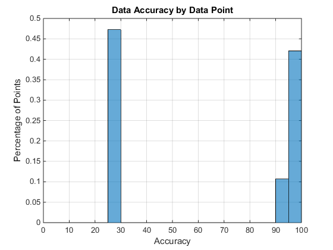
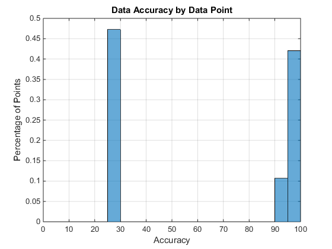

Contents
Accuracy Activity Recognition
The charts below summarize the results of the Regression Test
Sample Size in Accuracy Log shows the number of samples in the "active" stage. To see the individual test breakdown click here .
The charts below summarize the results of the Regression Test
Sample Size in Accuracy Log shows the number of samples in the "active" stage. To see the individual test breakdown click here .